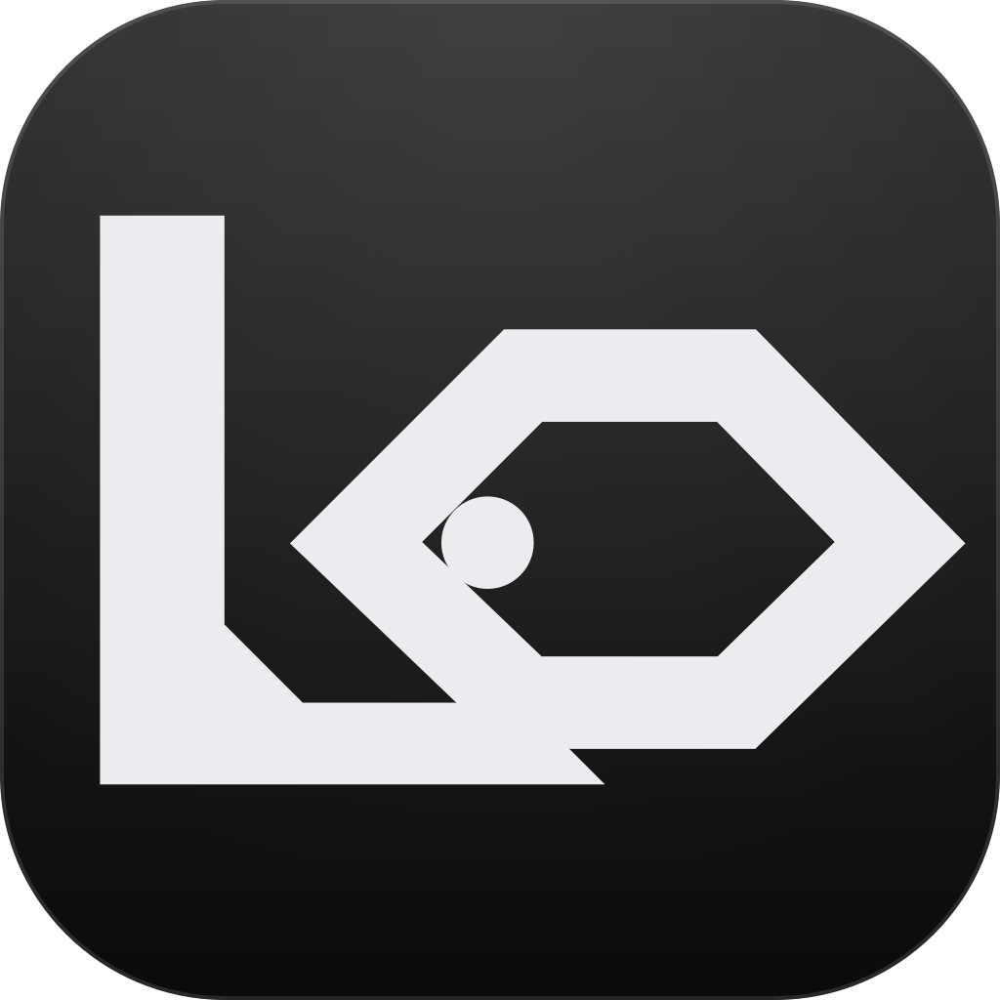

Tokyo Weekend
Land at Haneda on Friday evening and take the monorail into the city. The hotel is a short walk from a subway station in Yanaka.
Saturday is a slow walk through the neighborhood, a long lunch, and a bookstore that stays open late.

Laya NotesLaya Notes keeps every note as a plain Markdown file in a folder you choose. A small AI model, running on your own machine, reads each note and adds the tags that fit.
Free. No account. Works offline after a one-time model download.
Land at Haneda on Friday evening and take the monorail into the city. The hotel is a short walk from a subway station in Yanaka.
Saturday is a slow walk through the neighborhood, a long lunch, and a bookstore that stays open late.
Each note is a .md file; each folder is a real folder. Open them in Finder or Explorer, back them up, or keep them in a folder your own
sync service already covers.
A tag is a yes-or-no question, like “Is this note about a trip?” Laya answers every question for a note in one pass and keeps the tags it is confident about.
Install it and pick a folder. There is no account, no server and no subscription. Change the folder or the look of the app any time in Settings.
The model that suggests tags runs inside the app. The only download is the model itself, about 1.6 GB, once per computer. After that, Laya Notes works with no internet connection, and your notes are never uploaded anywhere.